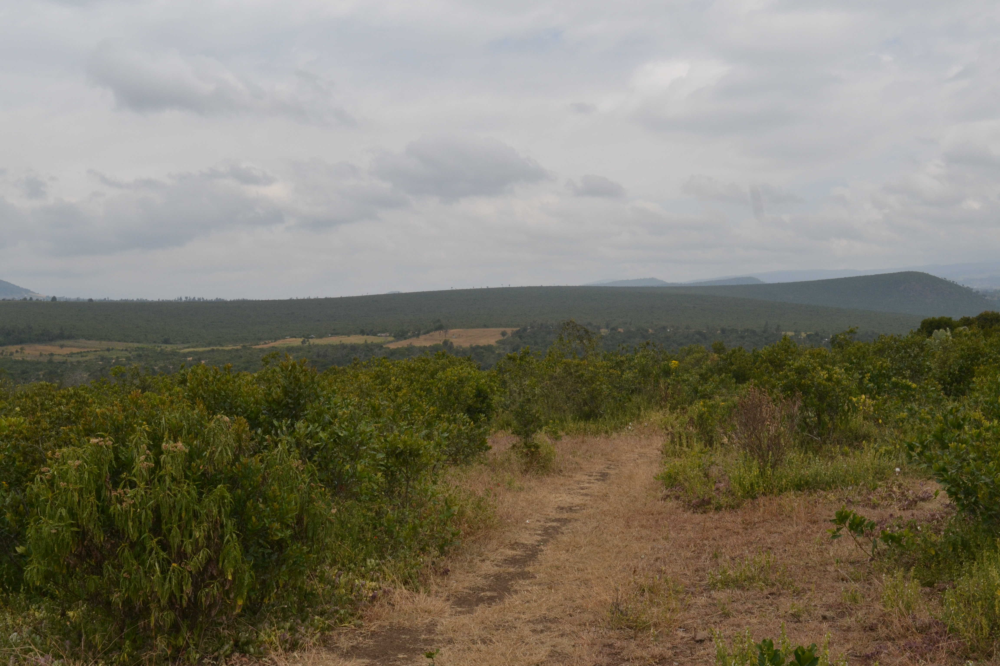

Research Projects
Bioacoustics
In this project we aim to use audio recordings obtained in the Mt Kenya ecosystem to perform biodiversity assessment, focussing on bird species which serve as an indicator species. Since 2015, we have collected audio recording from the Dedan Kimathi University of Technology conservancy and from the Mt Kenya National Park. Hundreds of recordings have been annotated with information on bird species vocalising within the recordings and we are currently developing machine learning models to automatically identify species found in the Mt Kenya ecosystem.

Agriculture
We aim to investigate the feasibility of use of the Internet of Things (IoT) by farmers in Nyeri county, Kenya to monitor crop growing and storage conditions to improve yields and prevent food waste.
The main objectives are to:
- Determine the main challenges facing farmers producers in Nyeri and potential IoT based mitigation measures.
- Develop, test and deploy IoT systems to gather data that could help mitigate challenges.
- Determine appropriate machine learning methodology to use to obtain predictions on food production and storage outcomes based on sensor data.
Environmental Monitoring
The aim of this project is to develop sensor systems to monitor the Upper Ewaso Nyiro river basin to help address challenges related to water resources management. We will develop river level and water quality monitoring solutions.
